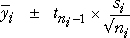

Taking account of unexplained variation
The best estimate of the mean response at each factor level is the corresponding sample mean,

However point estimates give no indication of the accuracy of the estimates, so 95% confidence intervals are often reported to give a better indication of randomness caused by unexplained variability in the experiment.
Confidence intervals
If it is concluded that a categorical factor affects the response, the effect of the factor can be summarised by a table of treatment means,

However these point estimates give no indication of their accuracy — the unexplained variation in the experiment means that the estimates are themselves random. The usual solution in statistics is to replace these point estimates with 95% confidence intervals.
It would be possible to independently calculate 95% confidence intervals using the means and standard deviations for each factor level,

However since we assume that the standard deviation is the same for all factor levels, a better confidence interval can be obtained by replacing the g sample standard deviations from the separate factor levels, {si} with its best estimate from the whole experiment — the square root of the mean residual sum of squares.
Since the pooled estimate is based on all the data, it is more accurate and results in narrower confidence intervals. When the pooled estimate of the standard deviation is used, the t-value in the formula should use the residual degrees of freedom. Since this is the sum of the degrees of freedom for the individual factor levels, the t-value is smaller (reflecting the increased accuracy of the estimate).

The confidence intervals are often displayed graphically, as shown in the diagram below.
Comparing the effects of four enzymes on production of corn syrup
The diagram below simulates yields of corn syrup in an experiment that varies the type of enzyme used to process the corn mash into sugars. Four enzymes are used and there are initially 3 replicates for each.
The 95% confidence intervals are initially calculated using the separate means and standard deviations for each enzyme, and they are shown as blue rectangles in the diagram. Note that they vary in width since the sample standard deviations are (by chance) different.
Select the checkbox Use pooled standard deviation to use the same standard deviation for all enzymes. Note that all all confidence intervals now have the same width and are (on average) narrower.
Repeat with more replicates. Observe that there is little difference between the two formulae when the number of replicates is high.